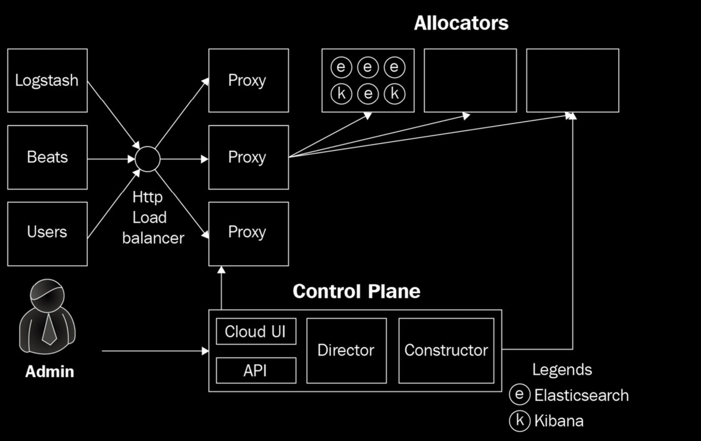

ELK Stack Overview
Elastic Stack
Components
- Elastic Search
- Distributed JSON-based search and analytics engine
- Logstash
- Collects logs, metrics, and other data from different sources
- Processes data (filtering, parsing)
- Outputs to various destinations
- Kibana
- Creates data visualizations and dashboards

Elastic Search
Structure
- Documents
- Type + JSON data (represents a row in a relational database)
- Index
- Collection of documents based on criteria (e.g., Customers index)
- Shards
Primary shard: Handles read/write operationsReplica: Read-only copy of a primary shard
Cross Cluster Search (CCS)
A single search request can be performed on both local and remote clusters.
Kibana
The metrics of Kibana are not shown by default. You need to create a default index pattern Not to be confused with index template
Index and Index Template are Elasticsearch constructs. Index Pattern is a Kibana construct.
- Index templates
- Allow defining templates automatically applied to new indices
- Include both settings and mappings
-
Contain pattern template controlling template application
-
Index pattern
- Identifies one or more Elasticsearch indices to explore with Kibana
# Example kibana.yml
# Port for Kibana webserver to listen on
server.port: 5601
# Address/interface for Kibana to bind to.
server.host: 0.0.0.0
# List of Elasticsearch nodes for Kibana to connect to.
# In a multi node setup, include more than 1 node here (ideally a data node)
elasticsearch.hosts: ["http://elasticsearch1.host:9200",
"http://elasticsearch2.host:9200"]
# Credentials for Kibana to connect to Elasticsearch if security is setup
elasticsearch.username: "kibana_system
Filebeat
Beats can be used to collect and ship data directly from source systems (endpoints, network appliances, cloud APIs) into Logstash or Elasticsearch.
Beats Types
- Filebeat: Collects and ships log files
- Metricbeat: Gathers system and service metrics (CPU, memory)
- Packetbeat: Monitors network traffic
- Heartbeat: Checks service availability
- Auditbeat: Tracks user and process activity
- Winlogbeat: Ships Windows event logs
- Functionbeat: Serverless function for cloud monitoring
Log Aggregation and Metrics
Elasticsearch can aggregate large volumes of data quickly due to its distributed nature. Two primary types:
- Bucket aggregations: Group documents based on field values or ranges
- Metrics aggregations: Calculate metrics (avg, min, max, count, cardinality)
Log Standards
- UDM (Unified Data Model) Options
- Force log standard on all organization apps
- Transform logs to meet standard
Example of UDM
Imagine your company has:
- App A logs errors as:
{ "msg": "DB failed" } - App B logs errors as:
{ "error": "Database disconnect" }
Option 1 Solution:
Force both teams to use:
{ "message": "text", "severity": "level" }
Option 2 Solution:
Use Logstash rules to convert both formats into:
{ "message": "DB failed", "severity": "ERROR" }
Shard Sizing
- Each shard should hold between 30 GB and 50 GB of data
- High-performance search: benefit from smaller shards
- Logging use cases: can use slightly larger shards
Setting Up Elasticsearch
Runs on the JVM. Settings can be tweaked using jvm.options file (/etc/elasticsearch/jvm.options).
Static Changes
Checking Heap Size
- Recommended to set min/max heap size to same value
- Allocate no more than half available memory to JVM heap
Node Configuration
Configure using elasticsearch.yml (/etc/elasticsearch/elasticsearch.yml):
# All nodes in a cluster should have the same name
cluster.name: lab-cluster
# Set to hostname if undefined
node.name: node-a
# Port for the node HTTP listener
http.port: 9200
# Port for node TCP communication
transport.tcp.port: 9300
# Those dirs must exist before (elasticsearch needs RW permissions)
path.data: /mnt/disk/data
path.logs: /mnt/disk/logs
# List of initial master eligible nodes
cluster.initial_master_nodes:
# List of other nodes in the cluster
discovery.seed_hosts:
# Network host for server to listen on
network.host: 0.0.0.0
Dynamic Changes
Dynamic settings can be controlled using the _cluster/settings API.
Note: Older versions of Elasticsearch had a _type field for document types. This was deprecated in Elasticsearch 7.0 and will be removed. The value was set to _doc after deprecation.
Concurrency
To prevent data update collisions, Elasticsearch uses version identifiers to check current version and compute differences.
Documents
Documents are simply JSON blobs. Collections of documents are categorized for querying.
Mappings
Mappings define field types and names. Remember to always map your fields.
Text vs Keyword
- Text: Allows rich full-text search
- Keyword: Each token acts like an enum (lightning-fast lookups)
Uses TF/IDF algorithm for search relevance.